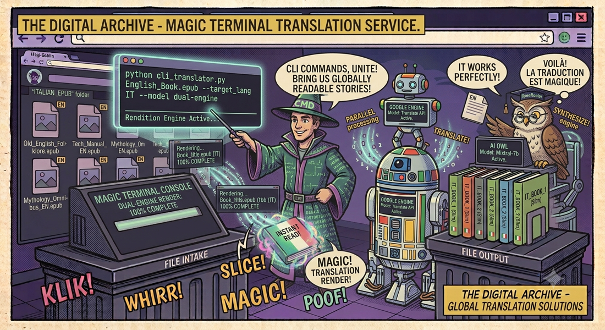

← Lingua & vocecli_translator
Traduci interi EPUB in italiano — o in qualsiasi lingua — con un solo comando. Due motori (Google Translate gratuito e AI via OpenRouter), elaborazione multithread, TOC ricorsivo. Un unico file Python, zero dipendenze pesanti.
📖 Cos'è
cli_translatorè un traduttore CLI per ebook EPUB progettato per la massima portabilità e qualità. Un singolo file Python monolitico (~800 righe) contiene tutta la logica: parsing EPUB, estrazione del testo da ogni capitolo preservando la struttura HTML/XML, traduzione tramite due motori intercambiabili, ricostruzione dell'EPUB con TOC tradotto ricorsivamente e salvataggio. I due motori sono Google Translate (gratuito, nessuna API key, veloce) e OpenRouter AI ( qualità letteraria superiore, supporta GPT-4, DeepSeek, OSS-120B e decine di altri modelli).
👤 A chi serve
cli_translator è ideale per lettori poliglotti, collezionisti di ebook e professionisti dell'editoria digitale. Chi vuole leggere romanzi e saggi in lingue straniere prima che escano le traduzioni ufficiali può tradurre interi EPUB con un solo comando. Blogger e content creator che operano in più lingue possono tradurre ebook per i loro lettori internazionali. Case editrici e agenzie di traduzione apprezzano la qualità letteraria del motore OpenRouter (GPT-4, DeepSeek) per produrre bozze professionali da raffinare. Il motore Google Translate è perfetto per traduzioni veloci e gratuite di testi non critici.
⚙️ Come funziona
La pipeline è orchestrata interamente da process_epub(). Fase 1: parsing EPUB con ebooklib — apertura del container ZIP, lettura OPF, individuazione dei capitoli (spine), estrazione del TOC gerarchico. Fase 2: estrazione testo con lxml — ogni capitolo XHTML viene parsato, il testo viene separato dalla formattazione HTML, i tag vengono preservati come placeholder. Fase 3: traduzione — con Google, il testo viene inviato in chunk via mechanize HTTP; con OpenRouter, i segmenti vengono raggruppati in batch da 20 ed elaborati in parallelo con ThreadPoolExecutor (configurabile, default 8 thread). Fase 4: ricostruzione— il testo
🎯 Il Problema
Tradurre un intero ebook EPUB è un'operazione complessa: bisogna estrarre il testo da ogni capitolo senza rompere la struttura HTML/XML, tradurre preservando tag e formattazione, aggiornare il TOC (Table of Contents) e ricostruire l'EPUB in modo valido. Gli strumenti generici falliscono su EPUB complessi o traducono in modo decontestualizzato. cli_translator risolve tutto questo con un parser EPUB dedicato e due motori di traduzione intercambiabili.
🌐 Due Motori di Traduzione
| Caratteristica | Google Translate 🏆 | OpenRouter AI |
|---|---|---|
| Prezzo | Gratuito | API key + crediti |
| API Key | Non richiesta | Richiesta (OpenRouter) |
| Qualità | Buona, veloce | Eccellente, letteraria |
| Contesto | Per frase | Batch da 20 segmenti |
| Modelli | N/D | GPT-4, DeepSeek, OSS-120B… |
🖥️ Utilizzo CLI
# Traduzione base con Google Translate (gratuito, nessuna API key) python cli_translator.py libro.epub # Traduzione con AI via OpenRouter (qualità superiore) export OPENROUTER_API_KEY="sk-or-..." python cli_translator.py libro.epub -OPR # Specifica modello AI e numero di thread python cli_translator.py libro.epub -OPR --model deepseek/deepseek-chat --threads 12 # Output: libro_ITALIANO.epub
⚡ Elaborazione Multithread
Con il motore OpenRouter, la traduzione avviene in batch da 20 segmenti elaborati in parallelo
tramite ThreadPoolExecutor. Il numero di thread è configurabile (default 8, consigliato 12).
Un log in tempo reale mostra il progresso con la velocità in segmenti/secondo.
📑 Traduzione del TOC
Il Table of Contents (indice) dell'EPUB viene tradotto ricorsivamente in tutte le sue gerarchie — capitoli, sottocapitoli, sezioni. Ogni voce del TOC viene elaborata in batch e riscritta nell'EPUB di output, preservando la struttura nidificata originale.
🧹 Sanitizzazione Intelligente
I modelli AI a volte restituiscono output con prefissi indesiderati come "Translation:", "Output:", "Traduzione:" o virgolette superflue. cli_translator include un layer di sanitizzazione che ripulisce automaticamente questi artefatti, garantendo un testo pulito nell'EPUB finale.
🏗️ Architettura
cli_translator/ ├── cli_translator.py # Script monolitico (tutto in un file) │ ├── GoogleFreeTranslateNew # Motore Google gratuito │ ├── OpenRouter # Motore AI via OpenRouter │ ├── Element / PageElement # Classi per nodi HTML/EPUB │ ├── Extraction # Parser ricorsivo dei capitoli │ ├── ElementHandler # Gestione placeholder e sostituzioni │ └── process_epub() # Pipeline completa ├── requirements.txt # ebooklib, lxml, mechanize, cssselect └── README.md
📋 Requisiti
| Pacchetto | Ruolo |
|---|---|
ebooklib | Lettura e scrittura file EPUB |
lxml | Parsing HTML/XML ad alte prestazioni |
mechanize | HTTP client per richieste di traduzione |
cssselect | Selezione elementi via CSS selector |
PySocks | Supporto proxy SOCKS (opzionale) |
🔒 Privacy
Con Google Translate il testo viene inviato ai server di Google. Con OpenRouter, il testo passa attraverso
il provider AI scelto (OpenAI, DeepSeek, etc.). Per la massima privacy, è possibile utilizzare modelli
open-source ospitati self-hosted tramite OpenRouter. Il file EPUB originale non viene mai modificato —
l'output è sempre un nuovo file con suffisso _ITALIANO.epub.